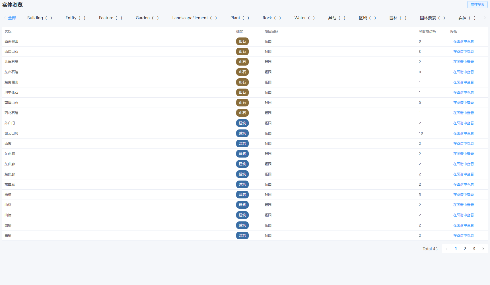
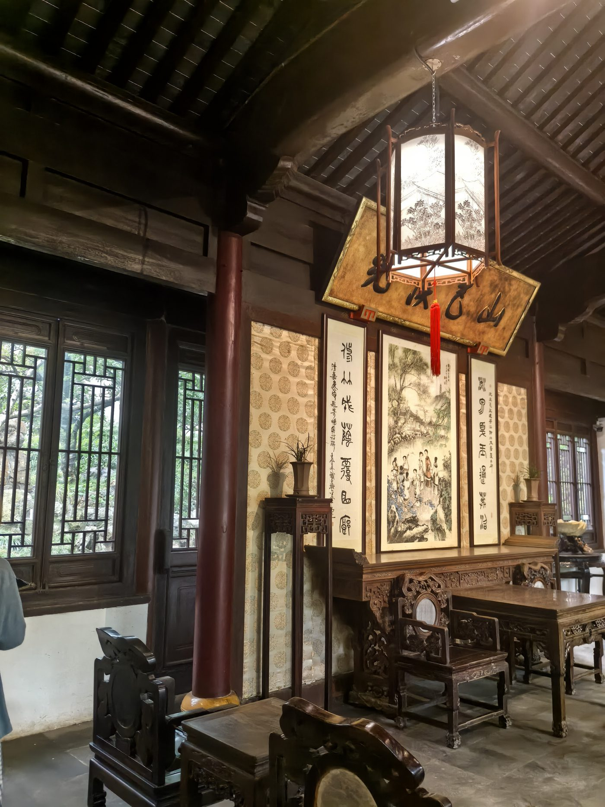
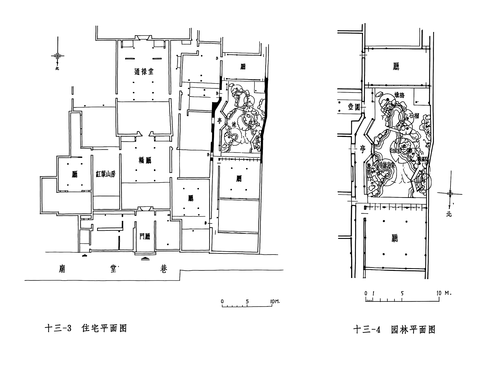
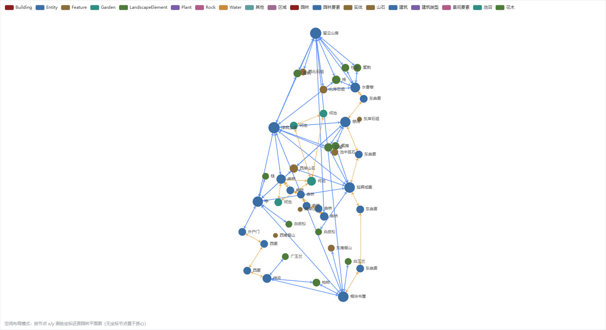
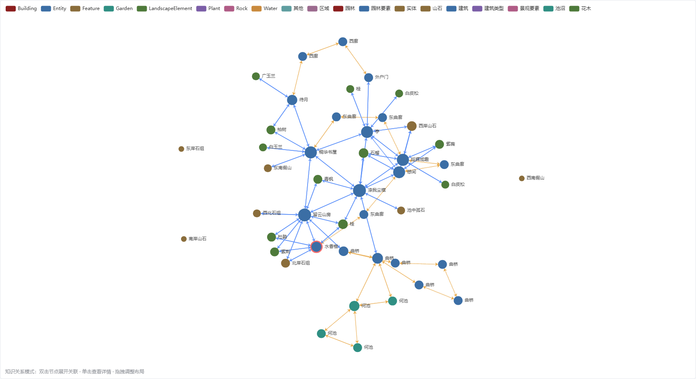
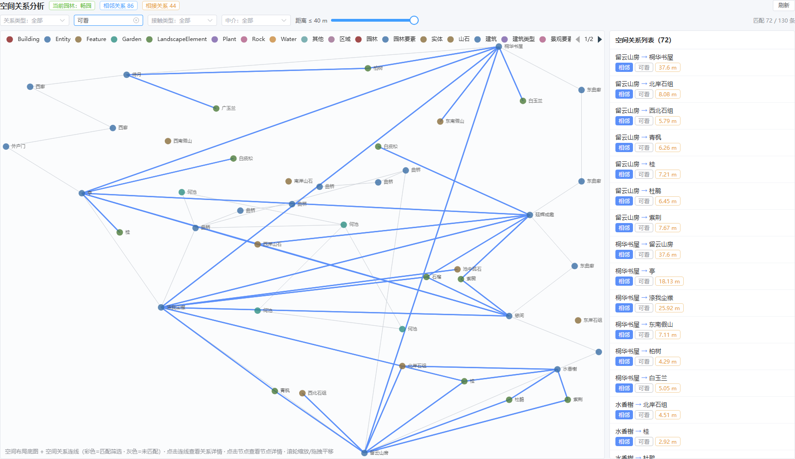
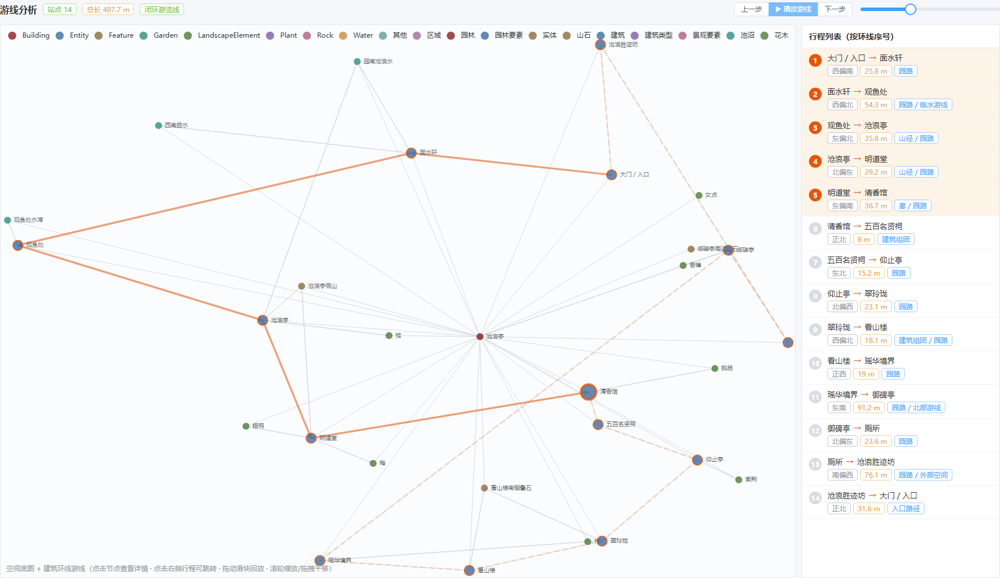
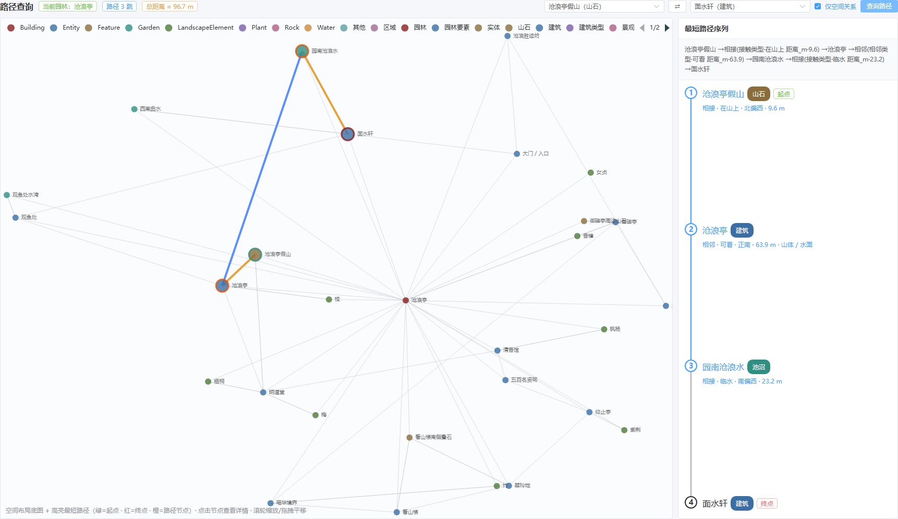
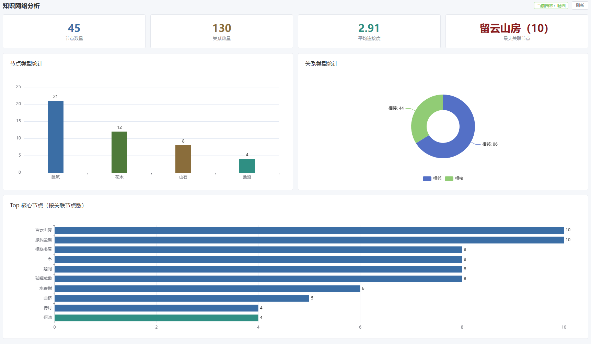

实体浏览：要素按类别检索，形制属性齐全

本项目面向江南古典园林数字化保护与研究的现实需求，以苏州畅园为主要实测案例，构建了覆盖 23 个江南古典园林的空间知识图谱数据库，并开发可视化平台，实现园林知识的浏览与检索、空间布局还原、游览动线复原、空间关系分析与路径查询。平台渲染的平面图与测绘原图一一对应，为园林遗产数字化建档与 AI 复原研究提供结构化知识底座。
许多名园已消失或改建（如乐郊园、影园仅存文献图绘），现存园林缺乏整合现状与历史的动态数字档案。
表格只能回答"园里有什么"，记不下"留云山房可看水香榭、相距 9.5 米"这类带方位、距离的关系。
以"要素—关系—属性"组织园林知识，叠加真实测绘坐标，还原空间格局与游园序列。







